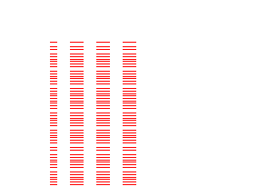

Appearance of the strange attractor of the mapping which we study in the references cited below (it is a mapping of the type Hénon-Lozi).
Appearance of the strange attractor of the mapping which we study in the references cited below (it is a mapping of the type Hénon-Lozi).
To see the effect of repeated application of this transformation, we take an arbitrary shape (a square digitized by an array of 100 by 100 regularly spaced points), and apply the transformation iteratively, (1, 2, 3, 4, 5, 6, 7, 8, 9, 10, 11, 12 times). The square is fastly deformed, after a few iterations the attractor becomes recognizable. The following iterations do not have any effect on it . It is a subset of the plane which is invariant with respect to the transformation.

The same figure, faster
See the papers:
 Dynamics of a Hénon-Lozi
type map in Chaos Solitons and Fractals, Vol. 12(12), 2323-2341,
(2001)
Dynamics of a Hénon-Lozi
type map in Chaos Solitons and Fractals, Vol. 12(12), 2323-2341,
(2001)
 Sur une approximation $C^1 d'un endomorphisme linéaire par morçeaux sur
le plan will be submitted, (2001-02 ?)
Sur une approximation $C^1 d'un endomorphisme linéaire par morçeaux sur
le plan will be submitted, (2001-02 ?)
 Multi-attractors
demonstration (Gallery of multi-spiral strange attractors)
Multi-attractors
demonstration (Gallery of multi-spiral strange attractors)
 Multi-folds attractors
(Gallery of multi-folds Strange attractors)
Multi-folds attractors
(Gallery of multi-folds Strange attractors)
Back to Aziz Alaoui's home page